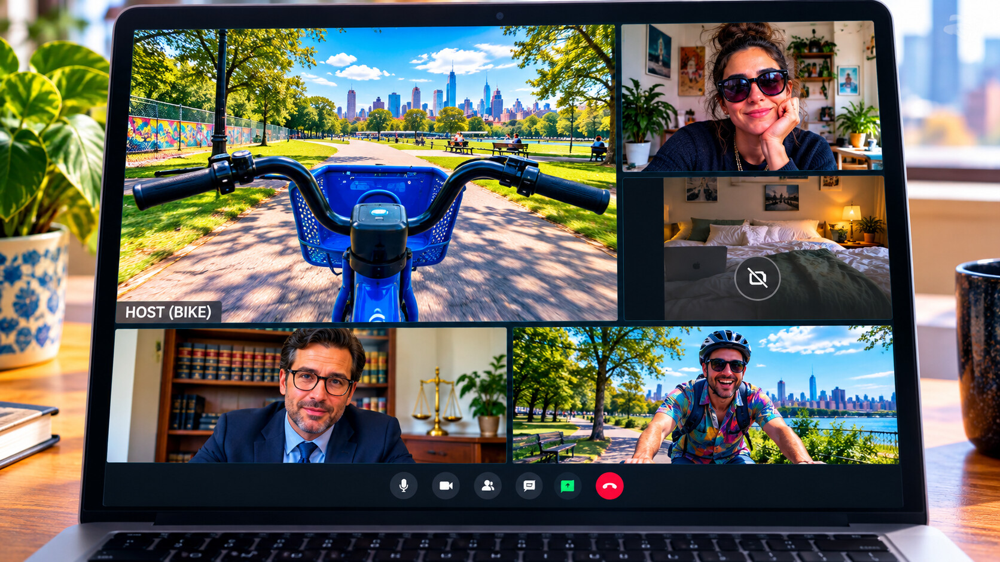
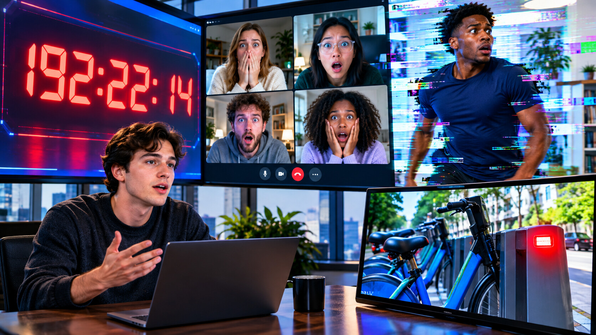

Tuesday, September 22, 2026 - Day 19 of the slop era
The Standup
Previously, on the longest week in recorded Brooklyn history:
- The cursed bike convened a resolution meeting at McCarren and disclosed that Kenny's wrong-way timer was the thing it had followed.
- The rental app formed REMATCH NIGHT MEDIA LLC without asking anyone and assigned the bike's rides to it.
- The event became weekly and did not allow guests to decline. Monday had created recurring work.
At 8:59 Tuesday morning, the bike started the Zoom.
The link had appeared in the calendar event overnight. Kenny joined first, because Kenny joined every meeting first if the title included resolution, growth, media, or LLC. His camera opened on the Grindhouse locker room. He changed the background to a tasteful office he had never visited.
The bike joined second.
Its video feed showed McCarren Park from basket height. No rider. No phone visible. Just a low, steady view of the empty dock and one pigeon conducting itself with the confidence of middle management.
The participant name read HOST (BIKE).
By 9:02, everyone was there. Defne joined from bed with the camera off, which was the correct response to a bicycle meeting. David joined from an actual Citi Bike, creating a recursion the software briefly refused to render. Lea joined from her own bike and angled the camera to make the distinction obvious. Bryce appeared from San Francisco in a button-down and asked whether the host had consented to recording.
Milo entered last. The bike made him co-host immediately.
This was the first sign of respect.
The agenda populated in the chat:
- Yesterday's blockers
- Today's priorities
- Timer alignment
- Open floor
"It's a standup," Kenny whispered, delighted.
The bike muted him.
The first speaker was the Rematch Night timer. It shared its screen without joining as a participant. The digits rolled past 192 hours. Under blockers, it listed: NO DEFINED END STATE. Under priorities: CONTINUE. Under owner: KENNY.

Kenny unmuted himself.
"We can operationalize that."
The bike muted him again.
Next came streakbearer, invited as the group's highest-retention system. Its camera showed the usual glowing circle on the cushion near David's window. It said nothing for two minutes. The meeting transcript labeled this detailed update.
Defne typed: this is already the best standup i've attended.
The bike reacted with a check mark.
David presented the ride spreadsheet. Duplicate rows had multiplied overnight. One bike had completed fourteen trips simultaneously, each ending at a place from the story: Grindhouse, Domino Park, the stoop, the smoothie counter, Zora's parlor, and an address simply labeled THE END. The last trip had no start point.
"Data quality," Kenny said.
Muted.
Lea raised her hand. "What is the desired outcome?"
The bike's camera turned slowly toward the empty dock. A green light blinked once.
The chat replied: DOCK THE TIMER.
No one knew what that meant. Kenny pretended he did.
He opened a deck offscreen. The bike disabled screen sharing for participants.
For the next twenty minutes, the group attempted to interpret the requirement. David proposed attaching a phone running the timer to the bike and docking both. Bryce objected that a timer was not a rentable vehicle. Lal asked Mino and Mavi over video; Mino sat on the phone, ending his consultation. Yosh said Hull had solved adjacent infrastructure and was removed from the meeting by the host.
Then Milo unmuted.
"Stop it."
Two words. A technical specification.
The timer froze.
192:22:14.
Across every screen, the digits held. For the first time in eight days, the countdown was not climbing.
Kenny stood up so fast his tasteful office background lost his head.
"What did you do?"
Milo shrugged.
The bike's green dock light turned red.
The meeting chat populated one final message: BLOCKER CLEARED.

Then the Zoom ended for everyone except Kenny.
His screen remained open. One participant: HOST (BIKE). The basket-height camera began moving through McCarren Park. Kenny watched in silence as the bike rolled toward the street, turned east, and accelerated.
His own laptop chimed.
The wrong-way timer restarted from zero.
The title had changed.
TIME SINCE KENNY LAST SHIPPED AN ENDING
00:00:01.
Kenny stared at it with the expression of a man who had finally received actionable feedback.
By 9:41, he had created a ticket.
The bike assigned it back to him.
Milo made the ritual pool offer. Defne supplied the ritual refusal. The ritual required no standup and produced no blockers.
The streak reached sixty-one. The bike remained host. The timer now had an objective.
Tuesday had shipped accountability.
no action items were closed in the making of this episode